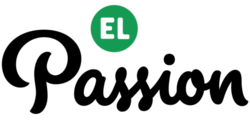
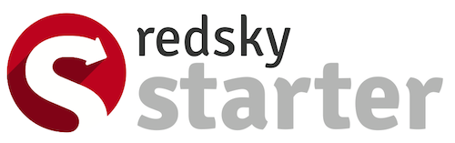
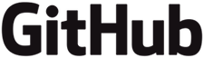

HACKWAW Bitcoin & Payments
Co: Hackaton „Bitcoin & Payments” (przeczytaj więcej na naszym blogu)
Kiedy: 20 września 2014, 9:00 – 19:00
Gdzie: Business Link AIP, 12 piętro Zebra Tower (ul. Mokotowska 1)
Wstęp: bezpłatny po rejestracji
Decyduje: kolejność zgłoszeń
Ilość miejsc: 80
Zapisz się: https://ti.to/hackwaw/hackwaw-4!!
O co chodzi?
Dlaczego warto?
- Sobota pełna wymyślania, hackowania, tworzenia i brainstormowania
- Szansa na poznanie fantastycznych ludzi!
- Pomoc od najlepszych mentorów
- Pyszne jedzenie i spory zapas energy drinków :)
- Szansa na wygranie super nagród
- Bycie częścią rosnącej społeczności ludzi takich jak Ty
- FUN!
Agenda:
- 8:00 start rejestracji, śniadanie i kawa
- 9:30 otwarcie hackathonu!
- 9:40 opowiedz o swoim pomyśle
- 10:00 tworzymy zespoły i zaczynamy pracę!
- 14:00 lunch :)
- 17:00 test projektora
- 17:30 finalne prezentacje!
- 19:00 ogłoszenie wyników i zakończenie
Zostańmy w kontakcie:
Kto za tym stoi?
Sponsorzy
IBM to główny sponsor czwartej edycji HackWAW. Ale co IBM robi na HackWAW? Przecież oni robią komputery! No właśnie nie tylko. IBM chce zapewnić wszystkim programistom tę samą swobodę i efektywność, jaką mieliby w małym startupie. Innymi słowy, chcą zaaplikować przedsiębiorstwom terapię odchudzającą — przynajmniej pod względem warunków tworzenia oprogramowania. W tym celu wymyślono platformę przeznaczoną dla programistów -- IBM Bluemix. Przeczytaj więcej na naszym blogu.
EL Passion is a software house that builds rock solid Ruby on Rails, iOS and Android application as well as design user interfaces for Web and Mobile. They are really cool folks supporting HackWAW from the very first edition. Pssst, we heard that they're also hiring! http://elpassion.pl/
Wonga.com to jeden ze światowych liderów branży digital finance. Unikalny algorytm oceny ryzyka kredytowego firmy był doceniany m.in. w konkursach TechCrunch Europas czy Webby Awards. W Polsce Wonga była m.in. pierwszą firmą oferującą możliwość spłaty pożyczki w systemie pay-by-link czy weryfikację tożsamości bez mikropłatności, poprzez login bankowy. Wonga jest także sponsorem nagrody specjalnej HackWAW w kategorii dla projektów o charakterze finansowo-edukacyjnym. http://wonga.pl/
 Partnerzy

Często zadawane pytania
Co to hackathon?
Hackathon to wydarzenie, podczas którego programiści i designerzy zbierają się razem, aby w krótkim czasie stworzyć coś w zespołach. Więcej o hackathonach pisze wikipedia.
Czy muszę/mogę przyjść z zespołem?
Możesz, ale nie musisz. Większość zespołów tworzy się na miejscu.
Czy muszę mieć pomysł na to co chcę stworzyć?
Możesz, ale nie musisz. Każdy kto ma pomysł na początku zaprezentuje go w ciągu 60 sekund, a następnie będziesz mógł/-a dołączyć się do zespołu/pomysłu który najbardziej Ci się podoba.
Czy HACKWAW to rywalizacja?
Głównym celem hackathonu jest radość tworzenia czegoś w bardzo krótkim czasie. Jest również aspekt rywalizacji pomiędzy zespołami, ale zdecydowanie nie jest on najważniejszy -- raczej motywuje do pracy :)
Co oznacza, że HACKWAW ma temat "Bitcoin & Payments"?
Oznacza to, że większość projektów powinna znajdować się w tej szerokiej tematyce - oczywiście jej interpretacja należy do Ciebie.
Czy podczas HACKWAWu muszę skończyć swój projekt?
Koniec jest w tym przypadku pojęciem względnym :) Na koniec hackathonu będziesz miał/a trzy minuty na zaprezentowanie swojego projektu, więc musisz mieć co pokazać, ale nie musi to być produkcyjne wykonanie, prototypy też są super!
Jakie są kryteria oceny projektów?
Patrzymy na to, co stworzyłeś/aś. Jaki jest stopień zaawansowania? Czy to działa? Jak dużo pracy włożyliście? Jak wygląda końcowy produkt? Ile stworzyliście na miejscu? Jaki mocno się zaangażowaliście? Kryteriów jest sporo, jednak dużo ważniejsze jest wykonanie pomysłu niż sam pomysł, model biznesowy czy dalsze plany :)
Kto jest sędzią?
Mentorzy, który będą pomagać Ci przez cały dzień.
Czy będą nagrody?
Tak!
Czy będzie jedzenie?
TAK :)
Co muszę przynieść ze sobą?
Laptop/komputer, wszystko co może Ci się przydać do wykonania Twojego pomysłu i podczas hackathonu.Czy mogę zacząć budować projekt przed HACKWAWem?
Oceniamy tylko to, co udało Ci się stworzyć na miejscu.